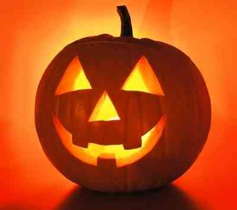
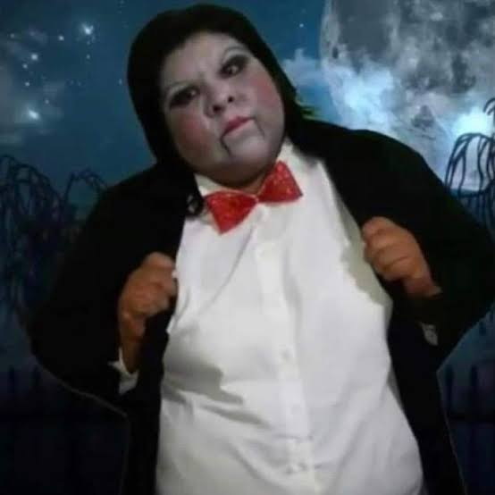

🎃 La magia de Halloween 🎃
Historia, origen y tradiciones
Halloween mezcla antiguas creencias relacionadas con los difuntos y el mundo sobrenatural con costumbres modernas, como el famoso truco o trato. Actualmente, es una celebración conocida por sus disfraces, calabazas, decoraciones y personajes de terror.
👻 ¿Qué es Halloween?
Halloween se celebra cada año el 31 de octubre. Durante esta fecha, muchas personas se disfrazan de brujas, vampiros, fantasmas, esqueletos y otros personajes. También se decoran las casas con calabazas, telarañas y figuras aterradoras.
Una de las actividades más populares es el "truco o trato", en la que los niños recorren las casas disfrazados para pedir dulces. Además, se realizan fiestas, concursos de disfraces y actividades relacionadas con el terror.
🎃 El ambiente de Halloween
.jpg)
📜 Historia y origen de Halloween
La palabra Halloween procede de la expresión inglesa "All Hallows' Eve", que significa víspera del Día de Todos los Santos. Su historia está relacionada con tradiciones cristianas y antiguas costumbres europeas.
Entre sus antecedentes se encuentra Samhain, una festividad celta asociada con el final de la temporada de cosechas y el comienzo de la época más oscura del año. Algunas creencias tradicionales relacionaban esta fecha con el mundo de los espíritus.
Con el paso del tiempo, las costumbres se transformaron y se mezclaron con otras tradiciones. La celebración adquirió gran popularidad en Estados Unidos, donde se desarrollaron muchas de las prácticas actuales, como los disfraces, las calabazas decoradas y el truco o trato.
🕯️ Halloween y la víspera de Todos los Santos
En la Inglaterra medieval, la palabra "hallow" se relacionaba con lo sagrado y con los santos. La festividad de Todos los Santos era conocida en inglés como "All Hallows".
La noche anterior se conoció como "All Hallows' Eve", nombre del que proviene la palabra Halloween. A lo largo de los siglos, las celebraciones religiosas y las costumbres populares siguieron caminos diferentes según la región.
Con el tiempo, Halloween se convirtió en una celebración cultural que incluye disfraces, dulces, decoraciones y actividades para personas de distintas edades.
🦇 Elementos importantes de Halloween
Estos son algunos de los elementos más representativos de esta celebración:
- Disfraces: ropa inspirada en personajes de terror y fantasía.
- Calabazas decoradas: se tallan rostros y figuras, y a menudo se colocan luces en su interior.
- Decoraciones: telarañas artificiales, murciélagos, esqueletos y fantasmas.
- Truco o trato: actividad en la que los niños piden dulces disfrazados.
- Fiestas: reuniones, concursos de disfraces y actividades temáticas.
🕸️ Símbolos de Halloween

🧛 Tradiciones, vestimenta y cultura
Los disfraces son una de las costumbres más conocidas de Halloween. Algunas personas eligen personajes clásicos, como brujas, vampiros y zombis, mientras que otras prefieren superhéroes o personajes de películas.
El maquillaje, las máscaras, los sombreros y los accesorios permiten completar cada vestimenta. Los colores más utilizados en las decoraciones suelen ser el negro, naranja, morado y verde.
🎬 Video sobre Halloween
Aquí puedes ver un video relacionado con esta celebración.
📰 Halloween: una tradición que se transforma
Halloween se ha convertido en una celebración reconocida en distintos lugares del mundo. Las personas decoran sus casas, crean disfraces y organizan actividades para compartir con amigos, familiares y vecinos.
Aunque algunas costumbres tienen raíces antiguas, muchas de las formas actuales de celebrarlo, como las fiestas de disfraces y el truco o trato, se han popularizado con el paso del tiempo y a través de películas, series y otras expresiones de la cultura popular.
🎃 Noche de Halloween
Una propuesta para organizar una actividad escolar con juegos, disfraces y decoración inspirada en Halloween.
🕓 Horario: 4:00 p. m. a 8:00 p. m.
📍 Lugar: Patio escolar
🎭 Actividades: concurso de disfraces, decoración de calabazas, búsqueda de dulces y concurso de decoración temática.
Nota: este evento es una propuesta para el proyecto escolar, no un evento confirmado.
🗳️ ¿Qué es lo que más te gusta de Halloween?
Elige una opción y después presiona “Enviar mi voto”.
Para guardar las respuestas y consultar los resultados en Excel, conecta esta encuesta con Microsoft Forms. Esta versión permite seleccionar una opción, pero todavía no registra votos.
🎃 ¡Regresa a la página principal! 🎃
Explora también las otras secciones de nuestro sitio.
⬅ Página principal 💀 Explorar Día de Muertos